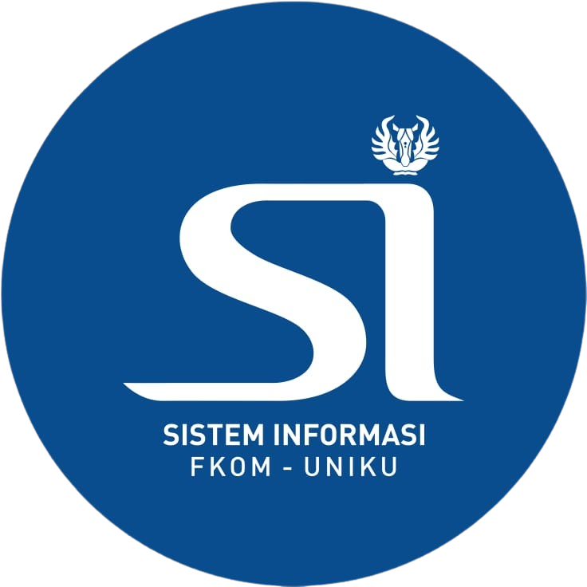
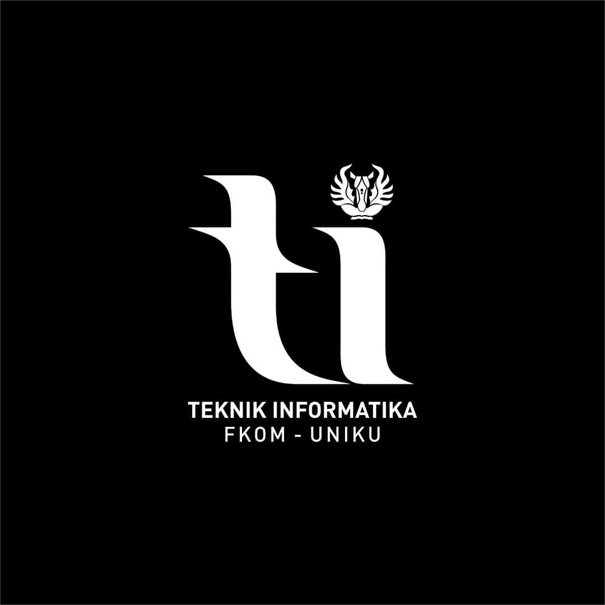
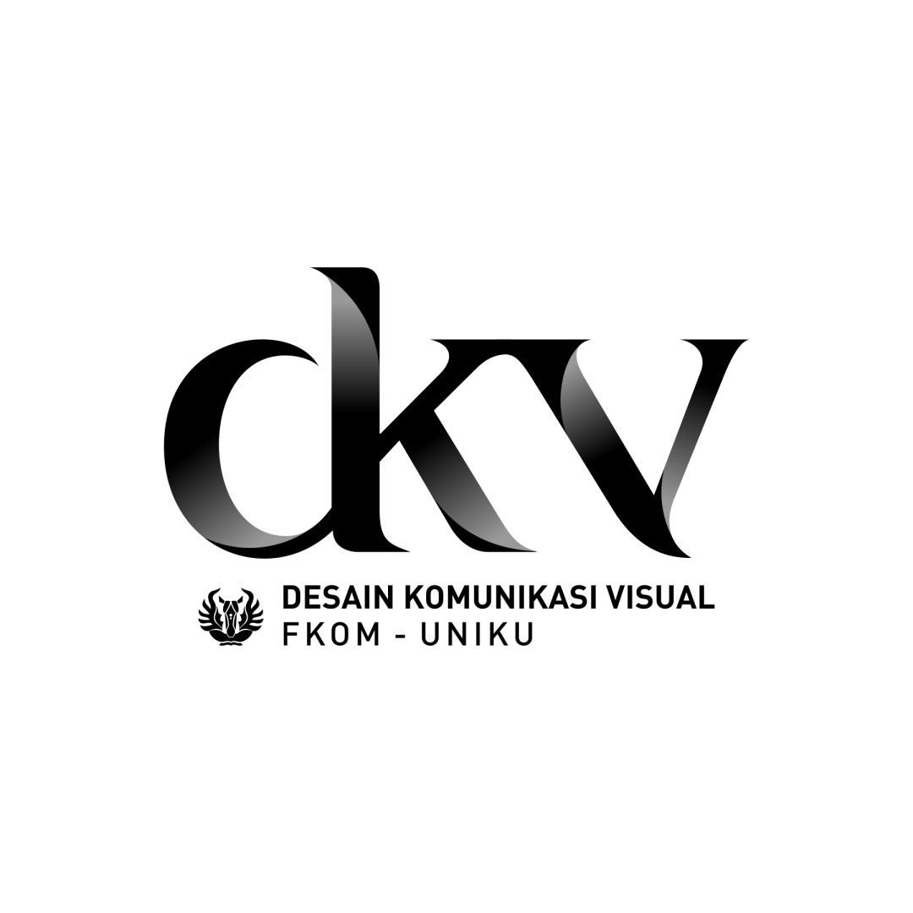
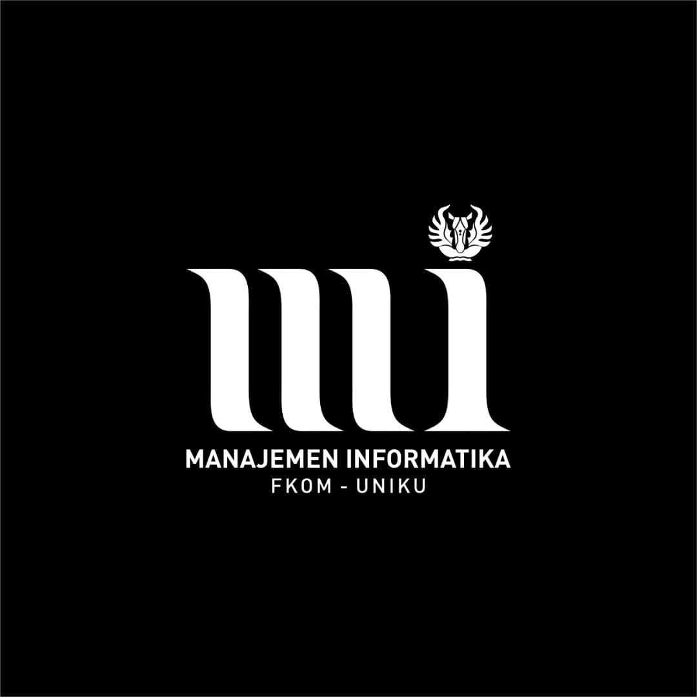

Terakreditasi B
VISI PROGRAM STUDI SISTEM INFORMASI S1
"Terwujudnya Program Studi SISTEM INFORMASI Sebagai Program Studi Yang Handal Dan Unggul Dalam Penyelenggaraan Tri Darma Perguruan Tinggi,
Unggul Di Bidang Rekayasa Sistem Informasi Di Wilayah Jawa Barat Pada Tahun 2032."
PROFIL LULUSAN & PILIHAN KARIR
- System Analyst
- Data Analyst
- Chief Information Officer (CIO)
- SoftwareQuality Assurance
KEGIATAN MBKM
- Magang
- Studi Independen
- Bangkit Academy
- Pertukaran Mahasiswa Merdeka (PMM) Nusantara
- International Credit Transfer (ICT)
PROGRAM UNGGULAN
- Pertukaran Mahasiswa ke University Utara Malaysia (UUM)
- Praktisi/Dosen Kompetensi dari Universitas lain
PRESTASI MAHASISWA
- Juara 1 lomba Desain Cindramata 2018
- Juara Favorit lomba poster STIKKU 2017
- Mahasiswa Berprestasi UNIKU 2022
- Duta Putra Sosial Kuningan 2022
- Juara Lomba LLDIKTI Konsep Garapan Terbaik Tingkat Jabar-Banten2022
- PPK Ormawa

Terakreditasi B
VISI PROGRAM STUDI TEKNIK INFORMATIKA S1
“Terwujudnya program studi yang handal dan unggul dibidang teknologi informasi yang memiliki standar kompetensi
dan menghasilkan tenaga-tenaga ahli IT yang cerdas dan berbudi luhur di wilayah Jawa Barat pada tahun 2032”
MISI PROGRAM STUDI TEKNIK INFORMATIKA S1
- Menyelenggarakan pendidikan bermutu tinggi dibidang Teknik Informatika bagi masyarakat sebagai sarana untuk menghasilkan lulusan yang bermoral, berkualitas, professional, kompeten, sesuai dengan kebutuhan standar industry, profesi dan perkembangan ilmu pengetahuan dan teknologi saat ini dan yang akan datang.
- Memenuhi kebutuhan masyarakat melalui pengenalan, pengalihan dan penyebaran ilmu pengetahuan dan teknologi yang relevan dengan ilmu teknik informatika untuk mencapai kualitas standar program studi dengan berfokus pada integritasi teknologi informasi dalam setiap aspek kehidupan manusia.
- Menemukan, mengembangkan dan menciptakan karya di bidang informatika serta menyebarkan ilmu pengetahuan dan teknologi demi kepekaan dan kepedulian terhadap kehidupan masyarakat.
- Menggalang penelitian untuk berperan aktif dalam peningkatan kemajuan ilmu pengetahuan dan teknologi, khususnya bidang informatika.
- Menumbuhkan budaya diskusi dlam pelaksanaan Tri Dharma perguruan Tinggi
KOMPETENSI PROGRAM STUDI TEKNIK INFORMATIKA S1
- Kemampuan untuk merancang dan melakukan eksperimen, menganalisis dan menginterprestasikan suatu perangkat lunak berbasis database dan system informasi untuk menyelesaikan persoalan teknologi informasi melalui metodologi mutakhir diberbagai bidang seperti pendidikan, perbankan, telekomunikasi, manufaktur, atau industri lainnya.
- Mampu mengembangkan system sesuai dengan fokus pada bidang keahlian yang dilakukan secara mandiri maupun bersama-sama, smart application untuk keperluan industri (soft computing) dan mengembangkan aplikasi mobile beserta infrastruktur pendukungnya (mobile computing).
- Membangun atau merancang system yang mampu mengakses informasi secara cepat, tepat dan akurat di sector industry maupun tempat mereka bekerja di masa depan. Khususnya merancang bangun perangkat lunak berbasis mobile, anatarmuka perangkat keras dan komunikasi data.
- Kemampuan berkomunikasi yang efektif dalam bahasa inggris Lisan maupun Tulisan.
- Kemampuan dan kapasitas pengetahuan yang cukup sebagai ahli teknik profesional untuk menjalankan tanggungjawab social, budaya, lingkungan, global, dan bisnis, serta peduli terhadap prinsip dan kebutuhan pembangunan berkelanjutan.
- Kemampuan untuk memanfaatkan teknik, keahlian dan peralatan atau tools modern yang diperlukan untuk menyelesaikan tugas dan tanggungjawabnya.
- Mengimplementasikan rancangan system secara efisien dan efektif di dalam sebuah software yang dirancang untuk organisasi atau tatanan komunitas lainnya sehingga mendukung tercapainya visi dan misi organisasi yang bersangkutan.

Proses Terakreditasi B
VISI PROGRAM STUDI DESAIN KOMUNIKASI VISUAL S1
"Menjadi program studi desain komunikasi visual yang unggul dalam bidang industri multimedia,
dan grafis yang berbasis teknologi iformasi dan memiliki komitmen yang tinggi terhadap pemberdayaan masyarakat tahun 2032”
MISI PROGRAM STUDI DESAIN KOMUNIKASI VISUAL S1
- Mengembangkan dan mengimplementasikan pendidikan Desain Komunikasi Visual berbasis teknologi informasi di bidang industri multimedia, periklanan dan desain grafis, yang kreatif serta dapat terintegrasi secara keilmuan dengan disiplin ilmu lain.
- Mengembangkan penelitian dan pengabdian masyarakat, sebagai bagian dari pengembangan keilmuan yang mempunyai nilai kebaruan yang bermanfaat bagi kebutuhan industri dan masyarakat.
TUJUAN PROGRAM STUDI DESAIN KOMUNIKASI VISUAL S1
- Menghasilkan lulusan (Sarjana Desain) yang kreatif dan berjiwa entreupreneur.
- Mengeksplorasi dan memecahkan permasalahan di bidang komunikasi visual dengan penekanan pada sisi inovasi dan integrasi keilmuan dengan menghasilkan karya penelitian dan produk inovasi.

Proses Terakreditasi B
VISI PROGRAM STUDI MANAJEMEN INFORMATIKA D3
“Mewujudkan program studi yang unggul dalam bidang teknologi informasi dan komunikasi dan bermutu berbasis entrepeunership yang diseleraskan dengan perkembangan teknologi informasi dan komunikasi
serta memiliki komitmen yang tinggi terhadap pemberdayaan masyarakat pada tahun 2032”
MISI PROGRAM STUDI DESAIN KOMUNIKASI VISUAL S1
- Mengembangkan dan mengimplementasikan pendidikan Desain Komunikasi Visual berbasis teknologi informasi di bidang industri multimedia, periklanan dan desain grafis, yang kreatif serta dapat terintegrasi secara keilmuan dengan disiplin ilmu lain.
- Mengembangkan penelitian dan pengabdian masyarakat, sebagai bagian dari pengembangan keilmuan yang mempunyai nilai kebaruan yang bermanfaat bagi kebutuhan industri dan masyarakat.
TUJUAN PROGRAM STUDI DESAIN KOMUNIKASI VISUAL S1
- Menghasilkan lulusan (Sarjana Desain) yang kreatif dan berjiwa entreupreneur.
- Mengeksplorasi dan memecahkan permasalahan di bidang komunikasi visual dengan penekanan pada sisi inovasi dan integrasi keilmuan dengan menghasilkan karya penelitian dan produk inovasi.